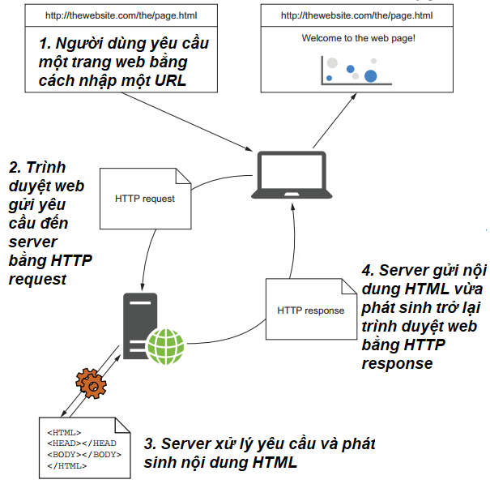
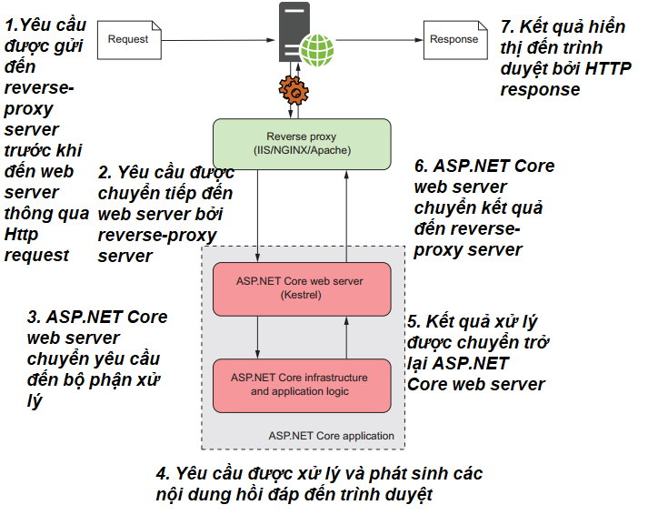
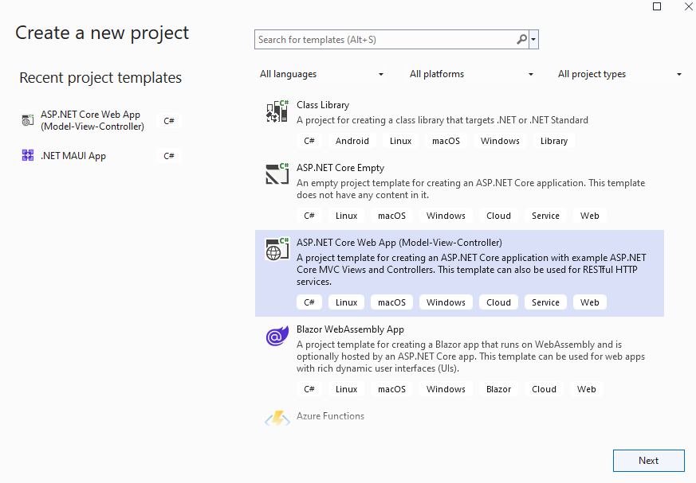
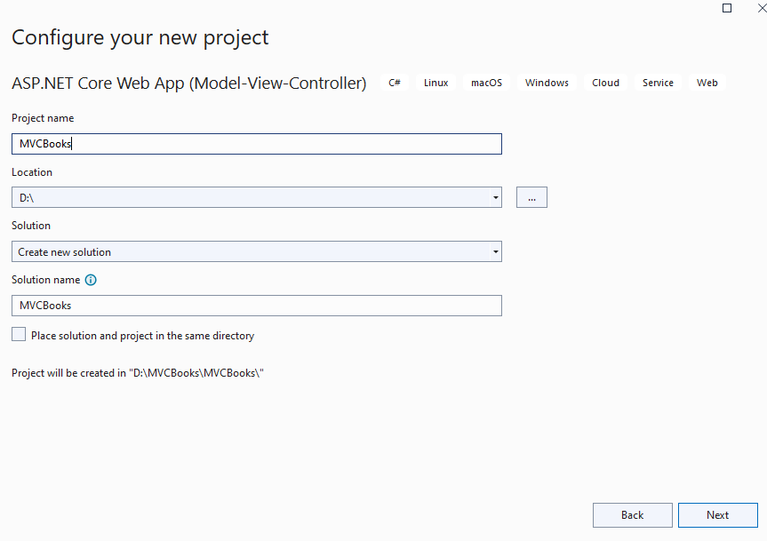
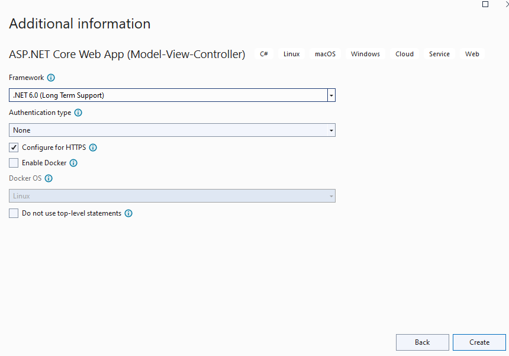
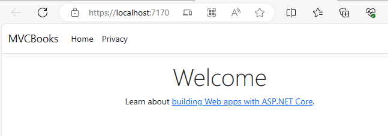
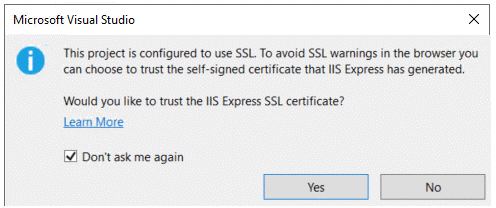
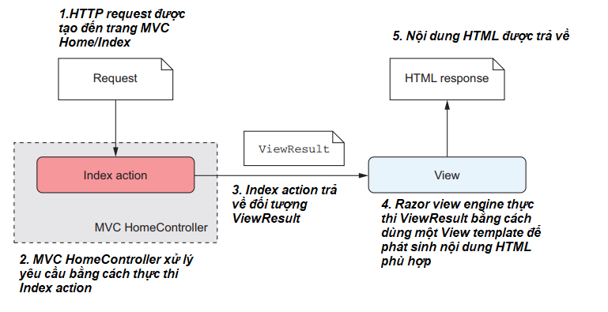
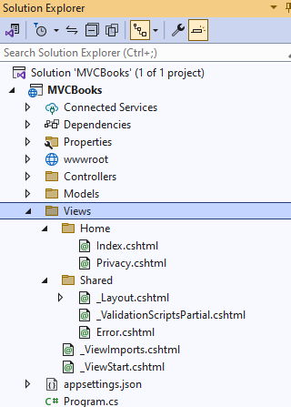

Nội dung bài học
ASP.NET Core là công nghệ phát triển ứng dụng web dựa trên hai nền tảng .NET Framework và .NET Core của Microsoft (Phân biệt .NET Core và .NET Framework có thể tham khảo tại đây ). MVC (Model View Controller) là mô hình phổ biến dùng để tách bạch dữ liệu, quy tắc nghiệp vụ và giao diện người dùng trong các dự án phát triển web. Công nghệ ASP.NET dựa trên hai nền tảng hoàn toàn khác nhau: ASP.NET dựa trên .NET Framework và ASP.NET dựa trên .NET Framework và .NET Core. Bài viết này là bài viết đầu tiên trong loạt bài viết giới thiệu về ASP.NET Core MVC hướng tới xây dựng một ứng dụng web sử dụng môi trường Visual Studio 2022 Community.
ASP.NET Core là phiên bản tiến hóa mới nhất của công nghệ ASP.NET, kế thừa những tính năng nổi trội từ ASP.NET cũ nhưng ASP.NET Core là nền tảng hoàn toàn mới, khác biệt so với ASP.NET trước đây. Để hiểu tại sao Microsoft lại quyết định xây dựng một nền tảng công nghệ hoàn toàn mới thay vì phát triển ASP.NET hiện có thì chúng ta cần hiểu một số ưu điểm và hạn chế của ASP.NET.
ASP.NET xuất hiện lần đầu vào năm 2002 như là một phần của .NET Framework 1.0. Ứng dụng ASP.NET lúc này là ASP.NET Web Forms cho phép tạo các ứng dụng dựa trên giao diện đồ họa và mô hình hướng sự kiện. Theo thời gian, với việc các ứng dụng ASP.NET Web Forms trở nên cồng kềnh, khó bảo trì nên đến năm 2009, Microsoft cho ra đời phiên bản ASP.NET MVC nhằm tạo các ứng dụng web dựa trên mô hình MVC. Dù có nhiều ưu điểm nổi bật hơn ASP.NET Web Forms nhưng cả hai cùng dựa vào một nền tảng với tập tin trọng tâm System.Web.dll. Sự phụ thuộc này kế thừa một số ưu điểm của .NET Framework như tính tin cậy cao và nhiều tính năng thuận tiện cho sự phát triển các ứng dụng web hiện đại trên nền tảng Windows, đồng thời cũng mang lại một số hạn chế. Sự hạn chế đầu tiên là sự thay đổi chậm chạp về nội dung trong tập tin System.Web.dll ảnh hưởng lớn đến khả năng mở rộng của ASP.NET, bên cạnh đó, các ứng dụng web hiện đại đòi hỏi thực thi đa nền (cross platform) tức là không chỉ thực thi trên Windows mà còn trên Linux hay MacOS.
.NET Core là một nền tảng mã nguồn mở được Microsoft giới thiệu lần đầu tiên năm 2014 và trở thành một trong những nền tảng phổ biến nhất hiện nay (có thể tham khảo thêm tại đây ). Với .NET Core, Microsoft có thể xây dựng một nền tảng công nghệ web thỏa mãn 4 mục tiêu:
Và ASP.NET Core - tức công nghệ ASP.NET kế thừa nền tảng cũ .NET Framework và phát triển thêm những tính năng mới trên nền tảng .NET Core - ra đời.
.NET Core là nền tảng hoàn toàn mới nhưng chia sẻ nhiều thư viện (API) giống nền tảng .NET Framework chỉ có điều các thư viện trong .NET Core có kích thước nhỏ hơn với mục đích cung cấp một mô hình lập trình và thực thi ứng dụng đơn giản hơn.
Khi quyết định chọn ASP.NET Core, cần xác định hai câu hỏi quan trọng:
Nếu bạn là trường hợp đầu tiên thì ASP.NET Core là lựa chọn hoàn hảo và vì những ưu điểm của ASP.NET Core nên nó cũng là lựa chọn hoàn hảo nếu bạn đang cân nhắc xây dựng một ứng dụng web mới (ý đầu tiên câu hỏi thứ 2). Nếu bạn muốn chuyển đổi một ứng dụng sẵn có sang nền tảng ASP.NET Core thì câu chuyện lại phức tạp hơn nhiều. Các ứng dụng dùng ASP.NET Web Forms, SignalR hay WCF thì việc chuyển đổi là không thể, nếu các ứng dụng dùng MVC hay Web API thì việc chuyển đổi đòi hỏi cập nhật thêm nhiều thông tin.
Tóm lại, nếu bạn là người mới bắt đầu phát triển một ứng dụng web dùng ASP.NET hay đang cân nhắc xây dựng một ứng dụng web hoàn toàn mới thì ASP.NET Core là lựa chọn hoàn hảo. Nếu ứng dụng sẵn có được xây dựng từ ASP.NET MVC, Web API và Razor thì việc chuyển đổi sang ASP.NET Core là khả thi.
HTTP là giao thức cốt lõi cho việc thực thi các ứng dụng web. Do đó, trước khi tìm hiểu về cách làm việc của ASP.NET Core, chúng ta cần tìm hiểu lại cách thức hoạt động của giao thức này.
Khi người dùng thực hiện một yêu cầu bằng cách nhập một đường dẫn hay URL vào thanh địa chỉ của một trình duyệt web thì yêu cầu này sẽ được gửi đến server (cũng có thể được hiểu là web server) thông qua chức năng HTTP request của giao thức HTTP. Tại server, yêu cầu sẽ được xử lý và server sẽ phát sinh một nội dung HTML để gửi trở lại trình duyệt web thông qua chức năng HTTP response của giao thức HTTP.
Quá trình thực thi được phản ánh thông qua 4 bước như hình dưới đây:
Người dùng từ trình duyệt web muốn gửi một yêu cầu đến ứng dụng ASP.NET Core cũng phải thông qua giao thức HTTP. Nhưng thay vì yêu cầu được gửi trực tiếp đến server (hay web server), nó phải thông qua một reverse-proxy server. Hiểu một cách đơn giản, một reverse-proxy server là một phần mềm có trách nhiệm nhận và chuyển tiếp yêu cầu từ người dùng đến server (hay web server). Các reverse-proxy server được công khai trên internet nhưng các web server thì chỉ có reverse-proxy server biết. Điều này làm tăng tính bảo mật và khả năng thực thi của các web server. Phần mềm reverse-proxy server trên Windows là IIS, trên Linux hay MacOS có thể là NGHINX hay Apache. Các bước thực thi được mô tả như hình sau đây:
 Ở đây, ASP.NET Core web server là Kestrel, một web server thực thi đa nền (cross-platform). Tham khảo thêm về Kestrel tại đây.Tạo ứng dụng ASP.NET Core MVC trong môi trường Visual Studio 2022 Community có nhiều cách và một trong những cách nhanh nhất là dùng các template có sẵn. Giả sử chúng ta muốn tạo một ứng dụng ASP.NET Core MVC quản lý sách tên MVCBooks, chúng ta thực hiện các bước sau:
1. Mở Visual Studio, chọn Create a new project, chọn ASP.NET Core Web App (Model-View-Controller) và nhấn Next
2. Đặt tên dự án trong mục Project name là MVCBooks và chọn vị trí lưu tại Location và nhấn Next:
3. Trong hộp thoại kế tiếp chọn .NET 6.0 (Long Term Support), các tùy chọn khác giữ nguyên (xem hình dưới) và nhấn Create:
Như vậy chúng ta đã hoàn thành việc tạo một ứng dụng ASP.NET Core MVC.
4. Thực thi ứng dụng ASP.NET Core MVC bằng cách nhấn vào Debug > Start Without Debugging hay Ctrl + F5.
Ở đây chúng ta thấy địa chỉ là https://localhost:7170 vì chúng ta chạy trên máy chủ cục bộ (hay IIS) sẽ có tên đại diện là localhost. 7170 là cổng ngẫu nhiên trên các máy tính (nên sẽ khác nhau trên các máy). Trong trường hợp xảy ra thông báo có nội dung sau:
Chúng ta chỉ việc chọn Yes để xác thực IIS Express SSL. Tiếp tục chọn Yes cho hộp thoại kế tiếp:
Từ cửa sổ Solution Explorer, chúng ta có thể lướt qua cấu trúc tổng thể của một dự án ASP.NET Core MVC với một số thành phần sau:
Là tập tin quan trọng nhất của ứng dụng .NET nhưng trong ASP.NET Core, nội dung tập tin này được lược giản để dễ đọc, dễ chỉnh sửa hơn. Ví dụ nội dung MVCBooks.csproj:
Thuộc tính Sdk của phần tử Project xác định kiểu dự án đang xây dựng (trong trường hợp này là Web). Phần tử TargetFramework xác định framework ứng dụng đang chạy, trong trường hợp này là .NET 6.0.
Đây là cách cấu hình cơ bản cho một ứng dụng ASP.NET Core để xử lý các yêu cầu (requests) và phản hồi (responses) lại client. Nội dung lớp Program từ MVCBooks:
Khởi tạo một thể hiện mới của WebApplicationBuilder với các cấu hình mặc định:
Thêm dịch vụ cho các controllers và views vào container. Điều này cho phép ứng dụng sử dụng MVC để xử lý HTTP requests
Cấu hình pipeline xử lý HTTP request. Nếu ứng dụng không phải là môi trường phát triển (Development), sử dụng trình xử lý ngoại lệ để chuyển hướng đến trang lỗi và sử dụng HSTS (HTTP Strict Transport Security) để thêm tiêu đề HSTS vào các responses:
Chuyển hướng tất cả HTTP requests đến HTTPS và phục vụ các tệp tĩnh như HTML, CSS, images và JavaScript từ thư mục web root mặc định (wwwroot)
Kích hoạt routing, cho phép ứng dụng khớp URL của incoming requests với các actions trong controllers
Thêm middleware xác thực, cho phép kiểm soát việc truy cập dựa trên các chính sách và quyền của người dùng
Định nghĩa một route mặc định với tên là default. Route này sẽ khớp với các URL theo mẫu {controller=Home}/{action=Index}/{id?}, nơi controller và action có thể được thay thế bằng tên controller và action tương ứng, và id là một tham số tùy chọn
Cách thức xử lý và hồi đáp yêu cầu người dùng đã được trình bày một cách tổng quát ở trên nhưng nếu muốn xem chi tiết hơn về cách mô hình MVC xử lý thì thông qua hình ảnh sau đây:
Khi một yêu cầu được tạo đến trang Home/Index, MVC HomeController sẽ xử lý yêu cầu bằng cách thực thi phần Index action. Kết quả sẽ tạo một đối tượng ViewResult chứa dữ liệu được dùng để phát sinh nội dung HTML. Việc phát sinh nội dung HTML do trình thực thi Razor đảm nhiệm và trình thực thi này sẽ xác định các Razor template phù hợp. Các Razor template được lưu trữ trong các tập tin có phần mở rộng là cshtml được chứa trong thư mục View:
Các Razor template chứa mã HTML, C# hay mã HTML phát sinh từ mã C#, tập tin _Layout.cshtml tạo ra các thành phần chung nhất của một trang web như header hay footer.
Như vậy, thông qua bài viết đầu tiên này, chúng ta đã có một cái nhìn tổng quan và cách tạo một ứng dụng ASP.NET Core MVC. Bài viết cũng trình bày lý do chọn ASP.NET Core MVC như là một lựa chọn tối ưu cho những nhà phát triển Web vừa mới làm quen với môi trường .NET hay đang muốn xây dựng một ứng dụng ASP.NET hoàn toàn mới.